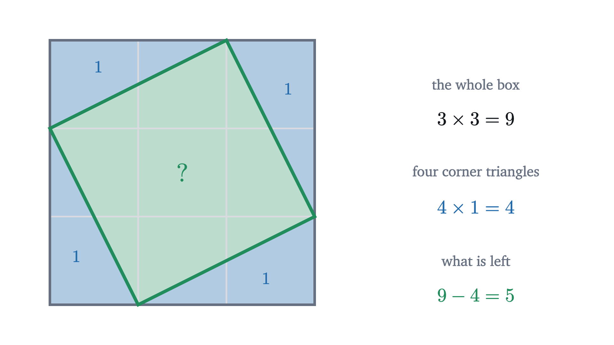
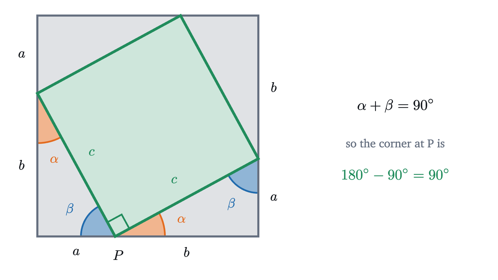
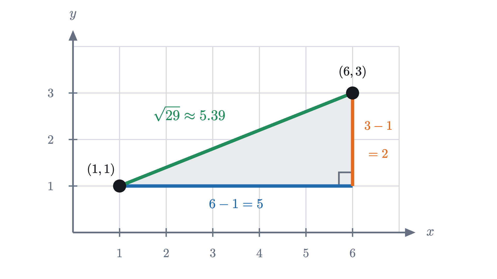
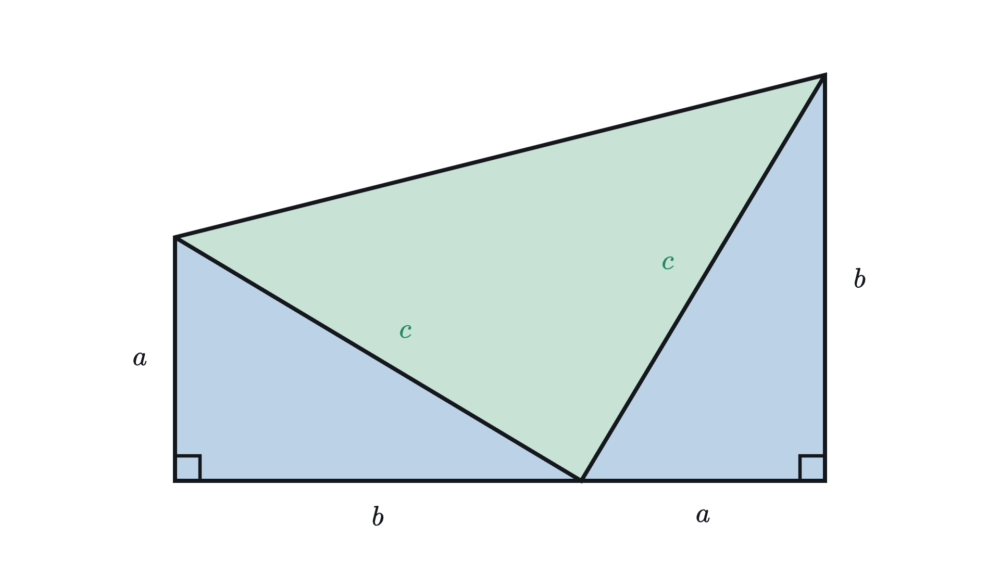
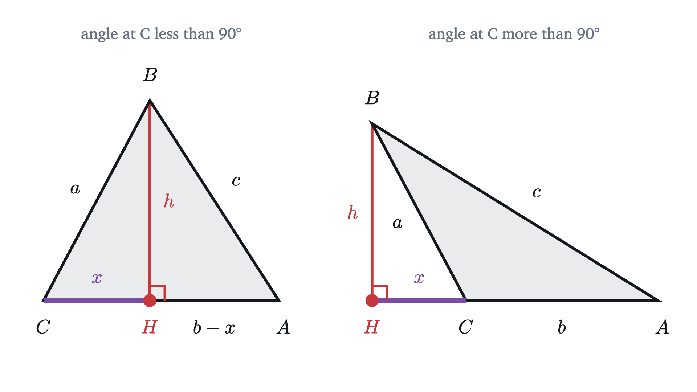

The Pythagorean theorem: a proof you can see
Why the squares on the two short sides of a right triangle add up to the square on the long side, proved by moving four triangles inside a box.
Draw a triangle with sides of 3, 4 and 5 units. It has a right angle between the two shorter sides, a fact builders use to lay out square corners. Now build a square on each side and count cells. The squares have 9, 16 and 25 cells, and $9 + 16 = 25$: the two smaller squares hold exactly as many cells as the largest one.
That could be a coincidence about the numbers 3, 4 and 5, since whole numbers often line up by accident. To find out, we have to try a right triangle that nobody picked for its nice numbers, and there we hit a practical problem straight away.
A triangle whose long side is not a whole number
Take the right triangle whose two shorter sides are 1 and 2. The squares on those sides have areas 1 and 4. If the pattern holds, the square on the long side should have area 5.
The long side of this triangle is not a whole number of units, so we cannot build its square out of unit cells and count. It sits tilted across the grid, cutting cells into odd fragments, so we need another way to measure the area of a tilted square.
One way is to put a box around the tilted square, with the sides of the box running along the grid. The box is easy to measure, and so is the part of it that is not the tilted square.

The box is 3 units on a side, so its area is 9. Each corner of the box is cut off by a triangle that is a copy of our 1-by-2 right triangle, and a right triangle with those sides is half of a 1-by-2 rectangle, so its area is 1. There are four of them. What remains is the tilted square, and its area must be
That is $1 + 4$, as the pattern predicted.
Pause and try
Do the same for the right triangle whose shorter sides are 2 and 3. Sketch the tilted square on its long side, put a box around it, and find the area of the tilted square. Is it $2^2 + 3^2$?
Show answerHide answer
The box has side $2 + 3 = 5$ and area 25. Each corner triangle is half of a 2-by-3 rectangle, so it has area 3, and the four of them take up 12. The tilted square has area $25 - 12 = 13$, and $2^2 + 3^2 = 4 + 9 = 13$. The pattern holds again.
The box also re-derives the case we started with. For shorter sides 3 and 4 the box has side 7 and area 49, the four triangles have area 6 each, and $49 - 24 = 25$.
The same computation with letters
Three cases agree, and all three were handled by one method. A method that never used anything special about its numbers can be run once with letters in place of the numbers, and then it covers every case at once.
In a right triangle, meaning a triangle with a 90° angle, the two sides that meet at the right angle are called the legs, and the side opposite the right angle, which is always the longest, is the hypotenuse. Call the lengths of the legs $a$ and $b$, and the length of the hypotenuse $c$.
The box has side $a + b$. Four copies of the triangle sit in its corners, and the hypotenuses of the four copies form a tilted four-sided shape in the middle.

Before computing its area we should check something that the grid pictures let us take for granted: that the shape in the middle is a square.
Its four sides are fine: each is the hypotenuse of a copy of the triangle, so each has length $c$. But a four-sided shape with equal sides can be a squashed diamond. We need its corners to be right angles, and that is where the previous lesson comes in. The angles of a triangle add to 180°, and one angle of our triangle is 90°, so the other two, call them $\alpha$ and $\beta$, add to 90°.
Pause and try
Look at the point $P$ on the bottom side of the box in the figure. Three angles meet there along the straight side: one from the triangle on the left, one from the triangle on the right, and a corner of the tilted shape between them. Which angles of the triangle are the two outer ones, and what does that force the middle one to be?
Show answerHide answer
The triangle on the left has its leg $a$ along the bottom, ending at $P$, so its angle at $P$ is the one opposite the leg $b$. Call that one $\beta$. The triangle on the right has its leg $b$ along the bottom, starting at $P$, so its angle at $P$ is the one opposite the leg $a$, which is $\alpha$. Along a straight line the three angles add to 180°, so the middle one is $180° - (\alpha + \beta) = 180° - 90° = 90°$.
The same happens at the other three corners, so the tilted shape has four equal sides and four right angles. It is a square of side $c$, and its area is $c^2$.
Now run the box computation. The box has area $(a + b)^2$. Each triangle is half of an $a$-by-$b$ rectangle, so it has area $\frac{1}{2}ab$, and the four together have area $2ab$. So
The $2ab$ that appears when $(a + b)^2$ is multiplied out is exactly the area of the four triangles, and it cancels. What is left says that the square on the hypotenuse equals the sum of the squares on the legs, for every right triangle.
Seeing the cancellation
The algebra is short, but the term $2ab$ arrives and leaves without our seeing what it is. There is a way to watch the same cancellation happen with no algebra, by moving the triangles.
Between the first step and the last the box is the same box and the four triangles are the same four triangles, moved without stretching, so the space they leave uncovered has the same area in both arrangements. In the first it is the square on the hypotenuse, and in the last it is the two squares on the legs.
This is the picture behind the algebra. The two $a$-by-$b$ rectangles in the final arrangement are the $2ab$ in $(a + b)^2 = a^2 + 2ab + b^2$: the last step of the figure is a drawing of that identity.
The theorem and its proof
Here is what we have found, stated in full and proved step by step.
The proof matches the earlier pictures piece by piece. The square $KLMN$ is the box, and $P$, $Q$, $R$, $S$ are the points where the tilted square touches it. The paragraph about the angles at $P$ is the check that the tilted shape is a square, and the final comparison of areas is the box computation.
Three things were used without proof: the side-angle-side criterion for congruent triangles, the angle sum of a triangle, and the basic rules of area (a square of side $s$ has area $s^2$, a right triangle is half a rectangle, and the areas of pieces that do not overlap add up). All are standard results of plane geometry. The angle sum is the one to notice, because it holds only on a flat surface, and so the Pythagorean theorem does too. We’ll come back to that.
Using the theorem
The theorem ties the three sides together, so any two of them determine the third.
Not every answer comes out whole. A right triangle with both legs equal to 1 has $c^2 = 1 + 1 = 2$, so $c = \sqrt{2} \approx 1.414$, a number that cannot be written as a fraction of whole numbers. The 1-by-2 triangle from earlier has hypotenuse $\sqrt{5} \approx 2.236$. Triples of whole numbers such as 3, 4, 5 and 5, 12, 13 are the exceptions.
Does it work backward?
The theorem starts from a right angle and concludes $a^2 + b^2 = c^2$. Builders use it in the other direction: they mark off sides of 3, 4 and 5 on a rope, pull it tight into a triangle, and trust that the corner between the 3 and the 4 is square. That is a different claim. It starts from the equation and concludes that there is a right angle, and it needs its own argument.
To get a feeling for it, take two rods of lengths 3 and 4 joined by a hinge, and watch the square of the distance $c$ between their free ends as the hinge opens and closes.
Closing the hinge brings the free ends together and $c^2$ drops below 25. Opening it pushes them apart and $c^2$ rises above 25. Since $c$ only grows as the hinge opens, it passes through the value with $c^2 = 25$ once, and the theorem tells us that this happens at 90°. So among all triangles with sides 3 and 4, only the right-angled one has third side 5. That is an informal argument, since “only grows” was read off the animation. Here is the statement with a proof that does not depend on it.
The proof uses the original theorem as a tool: it builds the right triangle we wish we had, lets the theorem compute its third side, and then observes that the given triangle has no room to be anything else.
Pause and try
Which of these are the side lengths of a right triangle? (a) 7, 24, 25. (b) 5, 6, 8. For the one that is not, use the hinge animation to say whether the angle opposite its longest side is smaller or larger than 90°.
Show answerHide answer
(a) $7^2 + 24^2 = 49 + 576 = 625 = 25^2$, so by the converse this is a right triangle, with the right angle opposite the side 25. (b) $5^2 + 6^2 = 25 + 36 = 61$, while $8^2 = 64$. These differ, so the triangle is not right-angled: if it were, the theorem would force $61 = 64$. The longest side is too long for a right angle, since $64 > 61$, and the hinge shows that this happens when the angle is opened past 90°. The angle opposite the side 8 is obtuse.
The last part of that answer uses a fact the hinge suggested and we have not proved: when the angle between sides $a$ and $b$ is less than 90° the third side satisfies $c^2 < a^2 + b^2$, and when it is more than 90°, $c^2 > a^2 + b^2$. The final problem at the end of the lesson asks you to prove it. It also marks the limit of the theorem. For a triangle without a right angle, $a^2 + b^2 = c^2$ is false for every choice of which side to call $c$.
Distance between two points
The most common use of the theorem does not look like a triangle problem at all. Take two points on a coordinate grid, say $(1, 1)$ and $(6, 3)$. How far apart are they?

Travel from the first point to the second in two moves: 5 units to the right, then 2 units up. The grid lines are perpendicular, so those two moves are the legs of a right triangle, and the straight segment joining the points is its hypotenuse. By the theorem its length $d$ satisfies $d^2 = 5^2 + 2^2 = 29$, so $d = \sqrt{29} \approx 5.39$.
For general points $(x_1, y_1)$ and $(x_2, y_2)$ the horizontal move has length $|x_2 - x_1|$ and the vertical move has length $|y_2 - y_1|$, and squaring removes the absolute values.
If the two points lie on the same horizontal or vertical line there is no triangle, but the formula still gives the right answer, because one of the two squares is zero. The distance formula is the Pythagorean theorem written in coordinates, and it is the form in which the theorem appears in much of mathematics, from the equation of a circle to the length of a vector.
Where it fails
The theorem is about right triangles in a flat plane, and both conditions matter. Without the right angle the equation is false, as the hinge showed. Without flatness it is false too. In the previous lesson we met a triangle on a sphere with three right angles, formed by the equator and two lines of longitude a quarter turn apart. Its three sides are all the same length $s$, a quarter of the way around the globe. Whichever side you call the hypotenuse, the theorem would demand $s^2 + s^2 = s^2$, which is false for any $s > 0$. The proof breaks at its first step, where we used the angle sum of 180° to get $\alpha + \beta = 90°$.
Looking back
The obstacle here was measuring a tilted square, whose side is usually not a whole number or even a fraction. The device that got around it was to enclose the awkward shape in a simple one and measure what was left over. That turned a question about a length we could not write down into a question about a box and four triangles, all with areas we could.
The same move, computing one area in two ways and comparing, is one of the most reliable sources of formulas in mathematics. The next lesson uses a cousin of it to find the area of a circle, by cutting the circle up and rearranging the pieces into a shape whose area is easy.
Check yourself
A rectangular field is 60 m long and 25 m wide. How long is the straight path from one corner to the opposite corner?
Problems
Problem 1
A right triangle has legs 8 and 15. Find its hypotenuse.
Show solutionHide solution
$c^2 = 8^2 + 15^2 = 64 + 225 = 289$, and $289 = 17^2$, so $c = 17$. Check: 17 is longer than each leg and shorter than $8 + 15 = 23$.
Problem 2
A right triangle has hypotenuse 13 and one leg 5. Find the other leg.
Show solutionHide solution
The unknown is a leg, so $5^2 + b^2 = 13^2$, which gives $b^2 = 169 - 25 = 144$ and $b = 12$.
Problem 3
Find the distance between the points $(-2, 3)$ and $(4, -5)$.
Show solutionHide solution
The horizontal difference is $4 - (-2) = 6$ and the vertical difference is $-5 - 3 = -8$. So $d^2 = 6^2 + (-8)^2 = 36 + 64 = 100$ and $d = 10$. The sign of the $-8$ does not matter, because it is squared.
Problem 4
A doorway is 0.9 m wide and 2.0 m tall. A thin, rigid, circular tabletop has a diameter of 2.15 m. Can it be carried through the doorway without bending it?
Show solutionHide solution
Neither the width nor the height of the doorway is 2.15 m, but a thin flat object can be tilted so that it passes along the diagonal of the opening. The diagonal of the doorway is the hypotenuse of a right triangle with legs 0.9 and 2.0, so its square is $0.9^2 + 2.0^2 = 0.81 + 4 = 4.81$, and its length is $\sqrt{4.81} \approx 2.19$ m. Since $2.15^2 = 4.6225 < 4.81$, the diameter is shorter than the diagonal, and the tabletop fits, with about 4 cm to spare.
Problem 5
Decide whether each set of lengths forms a right triangle: (a) 9, 40, 41; (b) 10, 15, 18; (c) 1, 2, $\sqrt{5}$.
Show solutionHide solution
In each case the only candidate for the hypotenuse is the longest side, so compare its square with the sum of the other two squares.
(a) $9^2 + 40^2 = 81 + 1600 = 1681$ and $41^2 = 1681$. Equal, so by the converse it is a right triangle.
(b) $10^2 + 15^2 = 100 + 225 = 325$ and $18^2 = 324$. These are close but not equal, so it is not a right triangle. (If it were, the theorem would give $325 = 324$.)
(c) $1^2 + 2^2 = 5$ and $(\sqrt{5})^2 = 5$. Equal, so it is a right triangle. This is the 1-by-2 triangle from the start of the lesson.
Problem 6
An equilateral triangle has all three sides of length 2. Find its height and its area. (Hint: the height from one corner meets the opposite side at its midpoint.)
Show solutionHide solution
The height splits the equilateral triangle into two right triangles. Each has hypotenuse 2 (a side of the big triangle) and one leg 1 (half of the base), and its other leg is the height $h$. So $1^2 + h^2 = 2^2$, giving $h^2 = 3$ and $h = \sqrt{3} \approx 1.732$. The area is half the base times the height: $\frac{1}{2} \cdot 2 \cdot \sqrt{3} = \sqrt{3} \approx 1.73$.

Problem 7
The figure above shows a proof of the Pythagorean theorem published in 1876 by James Garfield, later a president of the United States. Two copies of the right triangle are placed as shown and their top corners joined, making a trapezoid. (a) Show that the middle triangle has a right angle between its two sides of length $c$. (b) Compute the area of the trapezoid in two ways and deduce $a^2 + b^2 = c^2$. (The area of a trapezoid is half the sum of its parallel sides times the distance between them.)
Show solutionHide solution
(a) At the point on the bottom line where the two triangles meet, three angles lie along a straight line: the angle of the left triangle opposite its leg $a$, the angle of the middle triangle, and the angle of the right triangle opposite its leg $b$. The outer two are the two acute angles of the original triangle, which add to 90°. So the middle angle is $180° - 90° = 90°$. This is the same argument that showed the tilted shape in the box was a square.
(b) The parallel sides of the trapezoid are the two vertical sides, of lengths $a$ and $b$, and the distance between them is the length of the bottom side, $a + b$. So its area is $\frac{1}{2}(a + b)(a + b) = \frac{1}{2}(a^2 + 2ab + b^2)$. On the other hand, the trapezoid is made of two copies of the original triangle, of area $\frac{1}{2}ab$ each, and the middle triangle, which by (a) is a right triangle with both legs $c$ and so has area $\frac{1}{2}c^2$. Therefore
Multiplying by 2 gives $a^2 + 2ab + b^2 = 2ab + c^2$, and subtracting $2ab$ leaves $a^2 + b^2 = c^2$. Garfield’s trapezoid is half of our box, cut along a diagonal of the tilted square.

Problem 8
In a triangle $ABC$, write $a = BC$, $b = CA$ and $c = AB$. Let $H$ be the foot of the perpendicular from $B$ to the line $AC$, and write $x = CH$ and $h = BH$, as in the figure above. (a) If the angle at $C$ is less than 90°, then $H$ lies on the same side of $C$ as $A$. Show that $c^2 = a^2 + b^2 - 2bx$, so that $c^2 < a^2 + b^2$. (b) If the angle at $C$ is more than 90°, then $H$ lies on the line $AC$ beyond $C$. Show that $c^2 = a^2 + b^2 + 2bx$, so that $c^2 > a^2 + b^2$.
Show solutionHide solution
In both cases the perpendicular creates two right triangles, $BHC$ and $BHA$, and we apply the Pythagorean theorem to each. The triangle $BHC$ has legs $x$ and $h$ and hypotenuse $a$, so
(a) Here $H$ and $A$ are on the same side of $C$, so the distance from $H$ to $A$ is $|b - x|$. The triangle $BHA$ has legs $|b - x|$ and $h$ and hypotenuse $c$, so
where the last step replaced $x^2 + h^2$ by $a^2$. Since $b > 0$ and $x > 0$, the term $2bx$ is positive, and $c^2 < a^2 + b^2$. (Squaring makes the absolute value unnecessary, so the computation also covers the case where $H$ falls beyond $A$. If $H$ falls exactly on $A$, the triangle $BHA$ collapses to the segment $BA$, with $c = h$ and $b = x$, and the formula still holds.)
(b) Here $C$ lies between $H$ and $A$, so the distance from $H$ to $A$ is $b + x$. The triangle $BHA$ has legs $b + x$ and $h$, so
and $c^2 > a^2 + b^2$.
Together with the theorem itself, this shows that $c^2$ is less than, equal to, or greater than $a^2 + b^2$ exactly when the angle at $C$ is less than, equal to, or greater than 90°. The correction term $2bx$ is the beginning of the law of cosines.